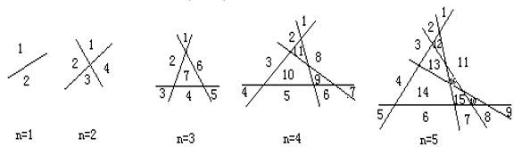

🗺️ 土地分区 🧭
👋 嗨，王国的首席绘图师！我是你的算法向导！
地图学家们在巨大的羊皮纸上画出了一道道笔直的墨线。每一道新画的直线，都会让这片古老的土地分裂出全新的区域，快用魔法算算它们究竟分成了多少块吧！
📜 任务清单 (题目描述)
在一个古老的王国里，地图学家们在平面上画了 n 条直线来划分土地。
画图规则：
- 任意两条直线都不平行（它们一定会相交）。
- 任意三条直线不相交于同一点（确保不会有“漏掉”的区域）。
计算任务： 请问这 n 条直线，最终会把这片无限大的土地分成多少个不同的区域？
📥 魔法输入阵：
(平面上画了 4 条直线)
4
📤 奇迹输出阵：
(一共分割出了 11 个区域)
11
🧠 魔法道具箱 (核心图解：直线的切割艺术)
直线分割平面和封闭曲线分割平面的规律截然不同！让我们看着魔法图纸，一步步解开直线切割土地的秘密：

👆 看这幅古老的绘图，每次新增一条直线，它穿过了多少个区域？👆
-
n = 1
第一条直线落下，把无限大的土地一分为二。总计 2 个区域。
-
n = 2
第 2 条直线与第 1 条相交。它被切成了 2 段，每一段都把一个旧区域一分为二，新增 2 个区域。
总计 2 + 2 = 4 个区域。
-
n = 3
第 3 条直线与前 2 条都相交。它被切成了 3 段射线/线段，新增 3 个区域。
总计 4 + 3 = 7 个区域。
-
n = 4
第 4 条直线穿过前 3 条线。它被切成了 4 段，像 4 把刀一样切出了 4 个新区域。
总计 7 + 4 = 11 个区域。
✨ 递推的终极奥义 (找规律)
你发现数字之间的秘密了吗？这简直是大自然最优雅的递增法则！
- 🎯 交点与线段： 当我们画第 n 条直线时，它必须和前面画好的 n-1 条直线都相交（共产生 n-1 个交点）。
- ✂️ 刀刃的数量： 这 n-1 个交点，会把这第 n 条直线切成刚好 n 段！
- 🌟 区域裂变： 每一段直线，就像切蛋糕的刀一样，穿过一个旧区域并将它一分为二。所以，有 n 段直线，就会凭空多出 n 个新区域！
💡 结论：画第 n 条直线时，一定会新增 n 个区域！
$$f(n) = f(n-1) + n$$
📘 C++ 魔法秘籍 (知识点)
- ⚙️ 递归函数的魅力： 我们定义了一个函数 int f(int n)。如果把它理解为魔法咒语：想知道 n 条线切了多少块，就去问问 n-1 条线切了多少块，然后加上 n 本身就好了！
- 🛡️ Base Case (边界条件)： 递归函数绝对不能无限套娃下去！if (n==1) return 2; 就是我们要设置的停止底线，没有它，程序会一直计算到崩溃。
💻 C++ 终极法术 (代码详解)
#include <iostream>
using namespace std;
int f(int n) {
if (n == 1) {
return 2;
}
return f(n - 1) + n;
}
int main() {
int n;
cin >> n;
cout << f(n);
return 0;
}
🐍 Python 魔法秘籍 (知识点)
- ✨ 极简递归： Python 写递归代码极其优雅，寥寥四行就勾勒出了递推的精髓。注意缩进，它是 Python 魔法阵运作的根基。
- ⚠️ 递归深度的隐患： 虽然递归很美，但 Python 默认有递归深度限制（通常是 1000 层左右）。如果 n 超级大，这段代码可能会报错哦！在实际比赛中，如果数据量极大，推荐用 for 循环或者直接代入数学公式。
💻 Python 终极法术 (代码详解)
def f(n):
if n == 1:
return 2
return f(n - 1) + n
def main():
n = int(input())
print(f(n))
if __name__ == "__main__":
main()
💡 技巧和重点总结 (划重点啦)
- 🌟 封闭曲线 vs 直线分割： 发现了吗？“封闭曲线”（如圆圈）第 n 次新增区域是 2(n-1)，而“直线”第 n 次新增区域是 n。切割方式不同，裂变的规律完全不一样，做题时千万不要搞混！
- 🌟 递归的三大基石： 写递归就像设计自动寻路机器人，必须具备：1. 要解决的问题能拆成更小规模的同类问题；2. 有一个绝对会触发的“停止底线”（Base Case）；3. 每次递归都必须向这个底线靠近。
- 🌟 O(1) 的数学降维打击： 这个递推序列 2, 4, 7, 11, 16... 展开后就是 2 + 2 + 3 + 4 + ... + n。利用等差数列求和公式，它可以被化简为一个终极通项公式：\( f(n) = \frac{n(n+1)}{2} + 1 \)。如果你直接输出这个算式的结果，连递归都不需要啦，运行速度直接无敌！